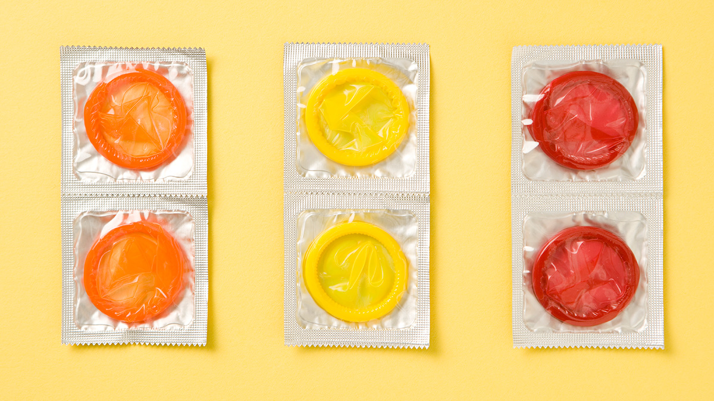
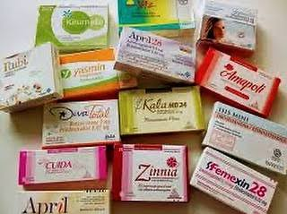
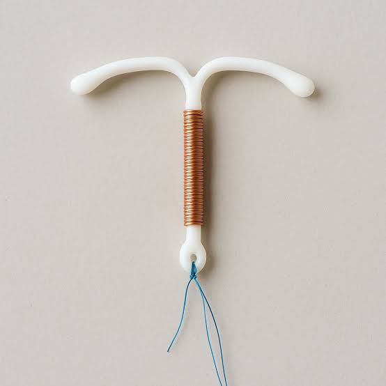
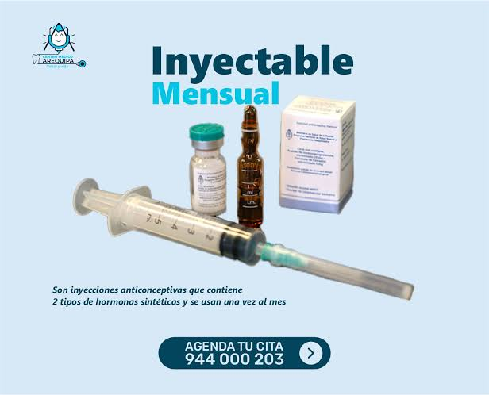
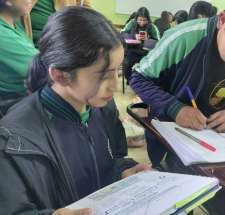
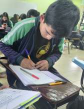
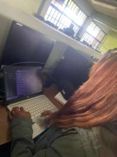
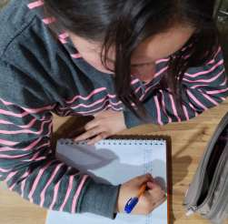
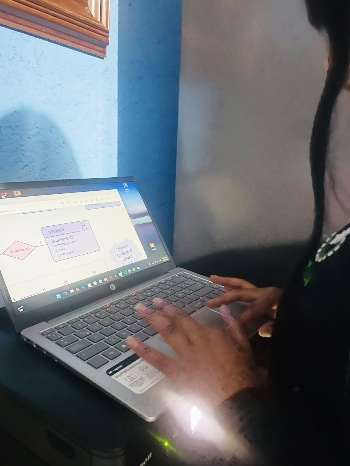

♟
¿Qué es?
El embarazo adolescente ocurre cuando una persona menor de 18 años queda embarazada. No solo implica cambios físicos, también afecta sus emociones, proyectos, relaciones y bienestar.
Conocer más →Infórmate, resuelve tus dudas y conoce opciones de prevención y apoyo. Tu salud, tus decisiones y tu bienestar importan.
El embarazo adolescente ocurre cuando una persona menor de 18 años queda embarazada. No solo implica cambios físicos, también afecta sus emociones, proyectos, relaciones y bienestar.
Conocer más →Entre las causas más comunes están: la falta de información, la curiosidad, la presión de grupo, la violencia, la irresponsabilidad y el inicio temprano de la vida sexual.
Mira y reflexiona →Puede generar problemas de salud, abandono escolar, violencia familiar y dificultades emocionales. No estás solo o sola. Existen servicios de salud, orientación y apoyo seguro.
Ver opciones de apoyo →
Ayudan a prevenir el embarazo y reducen el riesgo de infecciones de transmisión sexual cuando se usan correctamente en cada relación sexual.

Se toman según las indicaciones del producto y del personal de salud. No protegen contra infecciones de transmisión sexual.

Son métodos de larga duración colocados por personal capacitado. El tipo adecuado se decide con orientación clínica.

Hay opciones con diferentes tiempos de uso y consideraciones. Un profesional puede explicar beneficios, posibles efectos y contraindicaciones.
Importante: esta sección es educativa y no sustituye una consulta médica. La mayoría de los métodos anticonceptivos no protegen contra ITS; el condón sí reduce el riesgo. Busca atención de salud para elegir una opción adecuada.
La prevención del embarazo adolescente no solo es evitar un embarazo. También es cuidar tu salud física y mental, conocer tus metas, tener mejores oportunidades de estudio, trabajo y bienestar. Infórmate, pregunta y elige lo que te haga bien.
Conoce tu cuerpo, los métodos anticonceptivos y cómo prevenir un embarazo.
Comparte tus dudas con una persona de confianza: familia, amistades o profesional.
No te presiones. Cada persona tiene su propio ritmo y sus propias decisiones.
Usa métodos anticonceptivos, realiza controles médicos y pon atención a tu bienestar.
Tienes derecho a una relación sana, segura y sin presiones. Nadie debe obligarte.
Tus metas también importan. La educación y la planificación te dan más oportunidades.
Si necesitas atención médica, apoyo emocional o hablar sobre una situación de presión o violencia, acércate a una persona adulta de confianza y a servicios profesionales.
Aquí en solo un vistazo podrás conocer a las estudiantes que participaron en este proyecto escolar, respetando sus decisiones y cuidándonos en el proceso.

16Número de lista: 16
Organizó los avances del equipo y revisó el proyecto completo.

17Número de lista: 17
Apoyó la estructura, las funciones y las pruebas del sitio web.

18Número de lista: 18
Organizó y verificó la información educativa de las secciones.

19Número de lista: 19
Diseñó la presentación visual y la organización de los contenidos.

20Número de lista: 20
Documentó los avances y recopiló mejoras para el proyecto.
Explora estos videos educativos y conoce más sobre los temas que compartimos.
Este chatbot no diagnostica ni sustituye la atención médica.
Responde diez preguntas rápidas.
Lo que aprendas aquí te ayuda a cuidarte mejor.